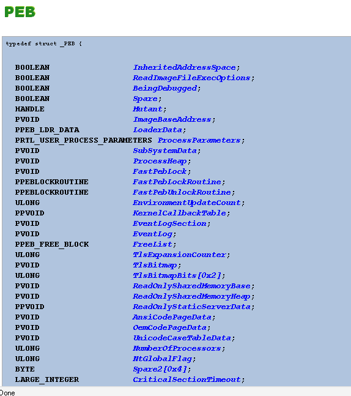
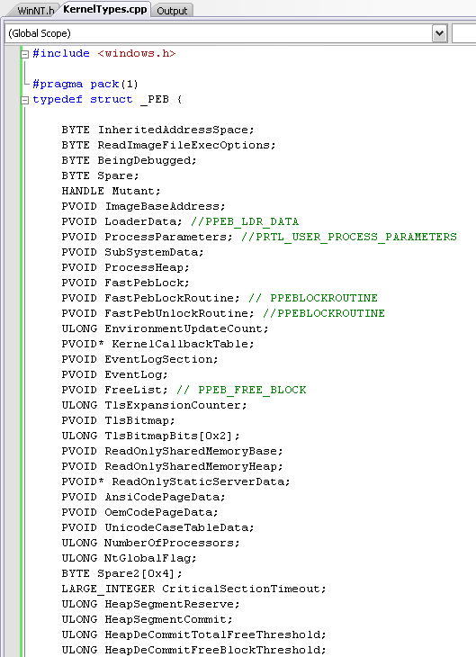

# Rotina
Caloni, 2010-01-01 <quotes> <self> <now> [up] [copy]A mente se apega ao que lhe é familiar.
A escolha começa no instante em que nos desidentificamos da mente e de seus padrões condicionados (“Perdoai-os, porque eles não sabem o que fazem”).
Tolle, Eckhart (O Poder do Agora, 1997)
# Importando tipos de outros projetos
Caloni, 2010-01-11 <computer> <blog> [up] [copy]A engenharia reversa das entranhas do kernel não tem limites se você sabe o que está fazendo. No entanto, algumas facilidades do depurador podem ajudar a minimizar o tempo que gastamos para analisar uma simples estrutura. Por exemplo, o Process Environment Block de um processo específico.
windbg -kl
Microsoft (R) Windows Debugger Version 6.9.0003.113 X86
Copyright (c) Microsoft Corporation. All rights reserved.
Connected to Windows XP 2600 x86 compatible target, ptr64 FALSE
Symbol search path is: SRV*c:\tools\symbols*http://msdl.microsoft.com/download/symbols
Executable search path is:
*******************************************************************************
WARNING: Local kernel debugging requires booting with kernel
debugging support (/debug or bcdedit -debug on) to work optimally.
*******************************************************************************
Windows XP Kernel Version 2600 (Service Pack 3) MP (2 procs) Free x86 compatible
Product: WinNt, suite: TerminalServer SingleUserTS
Built by: 2600.xpsp_sp3_gdr.090804-1435
Kernel base = 0x804d7000 PsLoadedModuleList = 0x8055d720
Debug session time: Mon Jan 11 10:36:50.061 2010 (GMT-2)
System Uptime: 5 days 1:05:24.958
Microsoft (R) Windows Debugger Version 6.9.0003.113 X86
Copyright (c) Microsoft Corporation. All rights reserved.
lkd> !process 0 0 notepad.exe
PROCESS 89068700 SessionId: 0 Cid: 0ec4 Peb: 7ffda000 ParentCid: 0b0c
DirBase: 0ac80a80 ObjectTable: e143a7d8 HandleCount: 152.
Image: notepad.exe
O comando !peb traz inúmeras informações sobre essa estrutura. Mas talvez estivéssemos interessados em coisas não mostradas por esse comando, mas [que existem na estrutura].
Nesse caso, podemos criar um projeto vazio que contenha a definição da estrutura **como acreditamos** que esteja na versão do kernel que estamos depurando.
Compilamos e geramos um PDB (arquivo de símbolos) que contém a definição desse tipo. Tudo que precisamos fazer agora é carregar esse símbolo na sessão que estivermos depurando.
É claro que nosso executável não vai existir na sessão de kernel local, mas isso não importa. Podemos usar qualquer módulo carregado e usá-lo como _host _de nosso conjunto de símbolos:
lkd> lm start end module name 804d7000 806e5000 nt (pdb symbols) c:\tools\symbols\ntkrpamp.pdb\D8743252F83B4F59985D6E19F33BFCAF1\ntkrpamp.pdb Unloaded modules: a5513000 a553e000 kmixer.sys bac50000 bac57000 USBSTOR.SYS a5711000 a5746000 truecrypt.sys a5731000 a5746000 wudfrd.sys a5a19000 a5a23000 wpdusb.sys ... a5731000 a5746000 wudfrd.sys a57a9000 a57b3000 wpdusb.sys a571b000 a5746000 kmixer.sys babf0000 babf5000 Cdaudio.SYS ba489000 ba48c000 Sfloppy.SYS babe8000 babed000 Flpydisk.SYS babe0000 babe7000 Fdc.SYS ------ Build started: Project: KernelTypes, Configuration: Debug Win32 ------ Compiling... KernelTypes.cpp Linking... LINK : program database c:\Tests\KernelTypes\Debug\KernelTypes.pdb missing; performing full link Embedding manifest... Build log was saved at "file://c:\Tests\KernelTypes\Debug\BuildLog.htm" KernelTypes - 0 error(s), 0 warning(s) ========== Build: 1 succeeded, 0 failed, 0 up-to-date, 0 skipped ========== Microsoft Windows XP [versÎáÎ÷Îýo 5.1.2600] (C) Copyright 1985-2001 Microsoft Corp. C:\Tests\KernelTypes\Debug>ren KernelTypes.pdb usbstor.pdb lkd> .sympath C:\Tests\KernelTypes\Debug Symbol search path is: C:\Tests\KernelTypes\Debug lkd> .reload /i /f usbstor.sys lkd> lm m usb* start end module name bac60000 bac66700 USBSTOR M (private pdb symbols) C:\Tests\KernelTypes\Debug\usbstor.pdb
Depois que o símbolo foi carregado em nosso módulo de mentirinha, tudo que temos a fazer é alterar o contexto do processo atual (para que os endereços de user mode façam sentido) e moldar nossa memória com o comando dt, usando o tipo importado do símbolo carregado.
lkd> .process 89068700
Implicit process is now 89068700
lkd> dt usbstor!_peb 7ffda000
+0x000 InheritedAddressSpace : 0xdc ''
+0x001 ReadImageFileExecOptions : 0xff ''
+0x002 BeingDebugged : 0x35 '5'
+0x003 SpareBool : 0x1 ''
+0x004 Mutant : 0x01360000
+0x008 ImageBaseAddress : 0x0135e000
+0x00c Ldr : (null)
+0x010 ProcessParameters : 0x00001e00 _RTL_USER_PROCESS_PARAMETERS
+0x014 SubSystemData : (null)
+0x018 ProcessHeap : 0x7ffda000
+0x01c FastPebLock : (null)
+0x020 SparePtr1 : 0x00000efc
+0x024 SparePtr2 : 0x000008b8
+0x028 EnvironmentUpdateCount : 0
+0x02c KernelCallbackTable : (null)
+0x030 SystemReserved : [1] 0x7ffde000
+0x034 ExecuteOptions : 0y00
+0x034 SpareBits : 0y000000000000000000000011111100 (0xfc)
+0x038 FreeList : (null)
+0x03c TlsExpansionCounter : 0
...
Para que isso funcione, a estrutura definida tem que bater offset por offset com os dados na memória, o que envolve alinhamento (se lembre do pragma pack) e versionamento corretos. Se isso não ocorrer, logo aparecerá algum lixo nos membros da estrutura que não fará sentido. Se isso ocorrer, detecte onde o lixo começa e verifique se o membro existe nessa versão do sistema operacional, ou se o alinhamento está de acordo com o módulo analisado.
Acho que não é preciso dizer que isso não serve apenas para kernel mode =)
!peb traz inúmeras informações sobre essa estrutura. Mas talvez estivéssemos interessados em coisas não mostradas por esse comando, mas [que existem na estrutura]: http://undocumented.ntinternals.net/UserMode/Undocumented%20Functions/NT%20Objects/Process/PEB.html
# Passagem por valor e emails com anexo
Caloni, 2010-01-18 <computer> [up] [copy]Mais uma analogia vencedora para ponteiros, chamadas por valor e chamadas por referência: e-mails.
Quando passamos um parâmetro por valor, estamos enviando um e-mail com um arquivo em anexo. Não importa o que o destinatário faça com o arquivo: nós não vamos saber o que foi mudado se ele não enviar uma outra cópia.
Por outro lado, ao passar um parâmetro por referência, estamos enviando um e-mail com um endereço de onde está o arquivo. Se o usuário alterar o arquivo diretamente do endereço que enviamos será possível ver essa alteração imediatamente, pois ambos estão olhando para o mesmo valor na memória.
A analogia pode ser levada mais longe, com ponteiros de ponteiros: enviamos um e-mail com o endereço de um arquivo; dentro desse arquivo existe um endereço para outro arquivo. Dessa forma é possível tanto alterar o arquivo final quanto o endereço de onde ele está; ou ainda "apontar" para outro arquivo, trocando o endereço de dentro do primeiro arquivo.
Assim é fácil de visualizar que os dados estão sempre em um arquivo que ocupa espaço na memória (do disco ou da RAM), mas endereços também podem ocupar espaço, se estiverem salvos em um arquivo.
Dessa forma, um e-mail que contenha um arquivo em anexo vai ser muito maior que um e-mail apenas com o endereço do arquivo, mas é porque todo o conteúdo do arquivo está dentro do e-mail no primeiro caso. No segundo caso, o endereço ocupa apenas alguns caracteres que identificam a localização do arquivo.
# House
Caloni, 2010-01-25 [up] [copy]Depois da analogia entre depuração e CSI, nada como fazer o mesmo com o seriado estilo House.
Quais as semelhanças com a profissão de programador-depurador?
Em primeiro lugar, a busca por pistas. Se algo está errado com o programa, vivemos criando teorias mirabolantes a respeito do porquê tal função estar retornando zero. No entanto, como não temos tanta capacidade adivinhatória assim, geralmente nossos palpites estão errados, e o fundo do poço irá nos mostrar uma outra função que nem estava ainda na história.
Mas existem alguns pontos-comuns de conhecimento que sempre desenvolvemos no decorrer da carreira:
* Se a última instrução do código é zero (ou algo próximo disso), provavelmente a pilha foi corrompida por alguém que tentou zerar uma variável, e junto dela o ponto de retorno de alguma função chamadora.
* Se um programa trava em um determinado momento, voltando após um período previsível de tempo (30 segundos), automaticamente sabemos que existe algum evento/mutex usado de forma errada que, dadas as circunstâncias, apresentou uma espera longa demais.
* Se uma versão nova capota em um procedimento em que a versão antiga nunca capotou, podemos divagar rapidamente quais as características da nova versão que fizeram com que isso acontecesse, ainda sem olhar para o código.
Dessa forma é possível criar teorias a partir da análise mental do que o programa normal deveria estar fazendo, mas não está. É esse tipo de análise que é feita no seriado.
Porém, o lado bom: podemos testar todas nossas hipóteses. Na vida real! Se, por enquanto, matar pacientes para depois ressuscitá-los é coisa de ficção, matar sistemas e reiniciá-los não é. E, dependendo do problema, podemos sempre replicá-lo em "outro paciente".
Talvez isso faça a profissão tão realizadora e viciante: para resolver um problema, geralmente temos todas as cartas na mão, e se não temos, fazemos ter. Afinal de contas, somos nós que iremos ressuscitar o sistema perdido.